<mat-toolbar color="accent" class="mat-elevation-z8">
    <button (click)="drawer.toggle()" mat-icon-button>
        <mat-icon>menu</mat-icon>
    </button>
    
    <span class="example-spacer"></span>
    <button routerLink="view-lobbies" mat-button>Join</button>
    <div class="toolbar-divider"></div>
    <button routerLink="create-lobby" mat-button>Create</button>
    <div class="toolbar-divider"></div>
    <button routerLink="profile" mat-raised-button class="custom-profile-button">Profile</button>
    <button mat-icon-button>
        <mat-icon>notifications</mat-icon>
    </button>
</mat-toolbar>
<mat-drawer-container autosize>
    <mat-drawer #drawer opened="false" mode="over" position="start" class="custom-drawer">
    <mat-nav-list>
        <mat-list-item>
            <button mat-button style="color: rgb(253, 255, 252);"><mat-icon>group</mat-icon> Friends</button>
        </mat-list-item>
        <mat-list-item>
            <button mat-button style="color: rgb(253, 255, 252);"><mat-icon>help</mat-icon> Help</button>
        </mat-list-item>
        <mat-list-item>
            <button mat-button style="color: rgb(253, 255, 252);"><mat-icon>logout</mat-icon> Log Out</button>
        </mat-list-item>
    </mat-nav-list>
    </mat-drawer>
    <mat-drawer-content>
        <div style="text-align: center;min-height: 1000px;">
            <router-outlet></router-outlet>
        </div>
    </mat-drawer-content>
</mat-drawer-container>